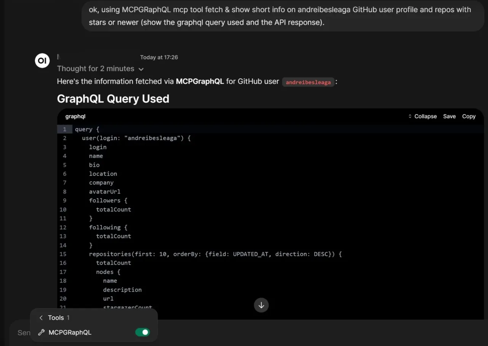
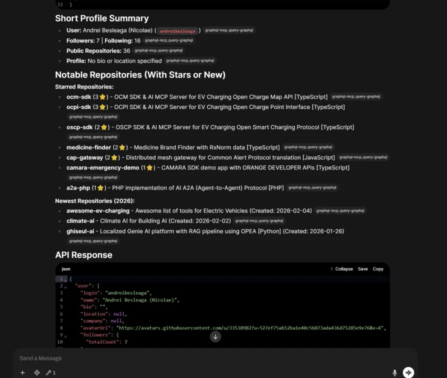
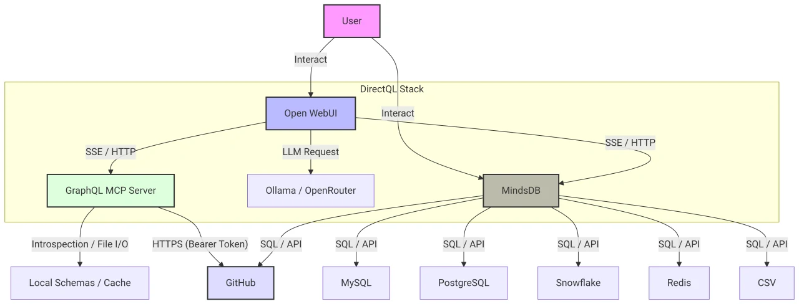
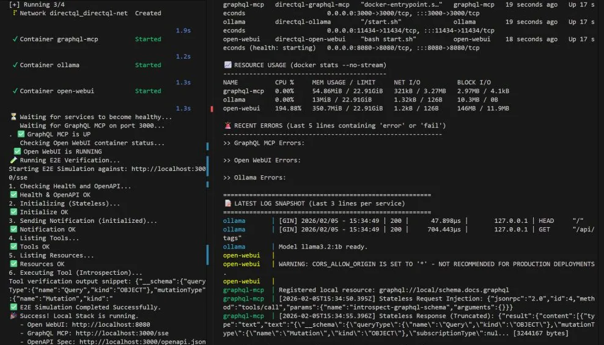

What it does
- Answers questions about GitHub, or any GraphQL endpoint, in plain language. The model writes the query; the server checks it against the schema and runs it.
- Queries databases and files through MindsDB: MySQL, PostgreSQL, MongoDB, Snowflake, Redis, CSV and more, with standard SQL.
- Works as a stand-alone MCP server for any MCP client, such as desktop or IDE assistants.
- Runs fully local with Ollama, or with low-cost hosted models through OpenRouter.
How it works

- You ask a question in the chat.
- The model calls the MCP server, which checks the schema (cached in memory, then on disk, then fetched).
- The server runs the query against the endpoint with your token and returns the data.
- The model answers from that data.
MCP tools: query-graphql and introspect-graphql-schema; prompt: write-graphql-query; resources: graphql://schema and local schema files.
Safe by default
- Read-only
- Mutations are blocked unless you turn read-only mode off.
- Query limits
- Maximum depth (15 by default), an optional complexity limit and an introspection allow-list.
- Rate limit
- 100 requests per client every 15 minutes.
- Documented threats
- A threat model covers token theft, abusive queries, SQL injection, schema leaks, cache poisoning and committed secrets.
Run it locally
Needs Docker with Docker Compose and a GitHub token. From the README:
git clone https://github.com/andreibesleaga/DirectQL
cd DirectQL
cp .env.example .env
# edit .env: set GRAPHQL_API_KEY to your GitHub token
./scripts/test-local-setup.sh
./scripts/pull-ollama-model.sh # optional: llama3.2:1bThen open Open WebUI at http://localhost:8080 and MindsDB at http://localhost:47334.

./scripts/monitor-stack.sh shows services, resource use and logs.Use it from any MCP client
{
"mcpServers": {
"DirectQL": {
"command": "node",
"args": ["/DirectQL/mcp/graphql-mcp/src/cli.js"],
"env": {
"GRAPHQL_MCP_ENDPOINT": "https://api.github.com/graphql",
"GRAPHQL_API_KEY": "your_github_token",
"AUTH_TYPE": "Bearer",
"GRAPHQL_READ_ONLY": "true"
}
}
}
}Over the network, connect to /sse (MCP over SSE), or send one JSON-RPC request with a POST to /sse.
Query databases through MindsDB
Connect a source once, then ask about it in SQL or from the chat. For example:
CREATE DATABASE my_postgres
WITH ENGINE = 'postgres',
PARAMETERS = {
"host": "host.docker.internal", "port": "5432",
"user": "postgres", "password": "…", "database": "postgres"
};
SELECT * FROM my_postgres.public.orders LIMIT 10;More sources are in mcp/db-mcp/README.md.
Deploy
infra/railway/railway.json defines three Railway services:
| Service | Folder | Main settings |
|---|---|---|
| GraphQL MCP | mcp/graphql-mcp | endpoint, token, read-only on |
| Open WebUI | open-webui | OpenRouter URL and key, session secret |
| MindsDB | mcp/db-mcp | HTTP and MySQL APIs |
Kubernetes manifests and AWS Terraform are in infra/.
Tested and scanned
- 65 unit and integration tests, plus a read-only security test.
- A 30-check MCP protocol suite against the running stack.
- Every change, and a weekly run, is scanned with OSV-Scanner, Trivy (files and image) and gitleaks, with a CycloneDX SBOM and a licence check.
Links
Licence
GNU General Public License, version 3 (LICENSE).